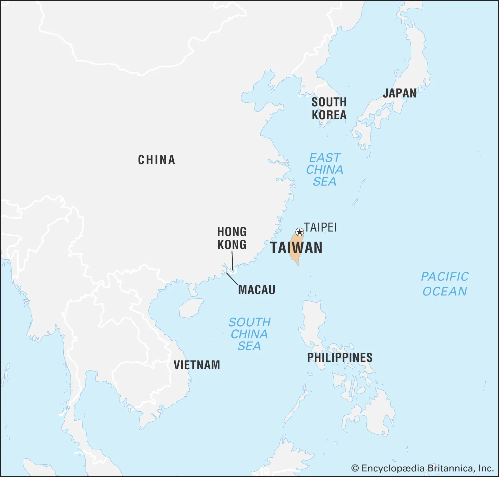
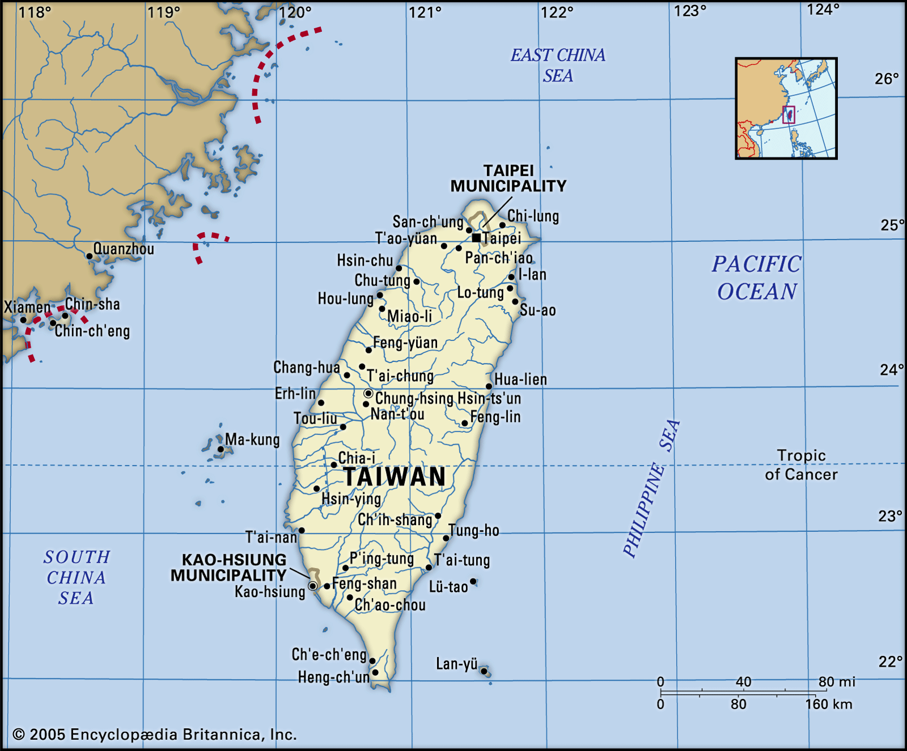
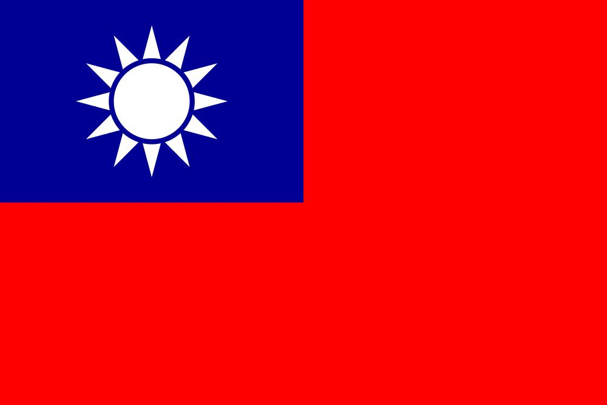

<div class="main_container main-container" id="main-container">
    <section class="main-container_nav container-nav">
        <div class="container-nav_container nav-container">
            <nav class="nav-container_navigation container-navigation">
                <ul class="container-navigation_list navigation-list">
                    <li class="navigation-list_item"><a href="">Introduction</a></li>
                    <li class="navigation-list_item"><a href="">History</a></li>
                    <li class="navigation-list_item"><a href="">Geography</a></li>
                    <li class="navigation-list_item"><a href="">Economy</a></li>
                    <li class="navigation-list_item"><a href="">Government and Politics</a></li>
                    <li class="navigation-list_item"><a href="">International Status</a></li>
                </ul>
            </nav>
        </div>
    </section>

    <!-- <section class="main-container_part container-part">
        <article class="container-part_block part-block">
            <h1 class="part-block_title">Intruduction</h1>
            <div class="part-block_info block-info">
                <div class="block-info_left info-left">
                    <p class="info-left_text">
                        <b>Republic of China (ROC)</b>, 
                        commonly referred to as Taiwan, is an island nation located in East Asia. 
                        It lies approximately 180 kilometers off the southeastern coast of mainland China, separated by the Taiwan Strait. 
                        Renowned for its vibrant democracy, technological innovation, and rich cultural heritage, Taiwan has emerged as a global leader in industries such as semiconductors and electronics. 
                        The island’s landscape is characterized by rugged mountains, lush forests, and bustling urban centers, with Taipei, the capital, serving as a hub for politics, culture, and commerce.
                    </p>
                    <p class="info-left_text">
                        With a population of over 23 million, Taiwan is a densely populated nation where traditional Chinese traditions blend seamlessly with modern influences. 
                        Although its international status is a subject of geopolitical contention, Taiwan operates as a self-governing entity with its own government, military, and constitution. 
                        The country is celebrated for its dynamic economy, commitment to human rights, and unique contributions to global culture, such as its famous night markets, bubble tea, and innovative tech industry.
                    </p>
                </div>
                <div class="block-info_right info-right">
                    <picture class="info-right_map right-map">
                        <div class="right-map_container map-container">
                            
                             
                        </div> 
                        <figcaption class="right-map_caption"> Map of territories administered by the ROC (Taiwan Area)</figcaption>    
                    </picture>
                    <picture class="info-right_flag right-flag">
                        
                        <figcaption class="right-map_caption">Flag of the ROC (Taiwan)</figcaption>    
                    </picture>
                </div>
            </div>
        </article>
    </section> -->

</div>